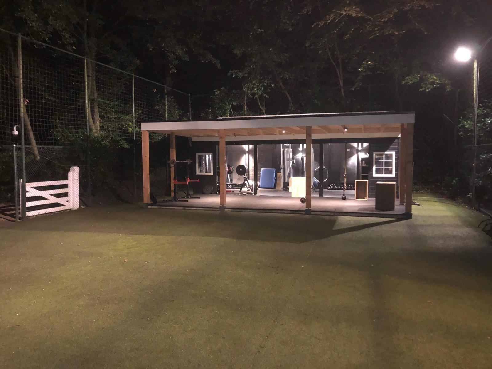
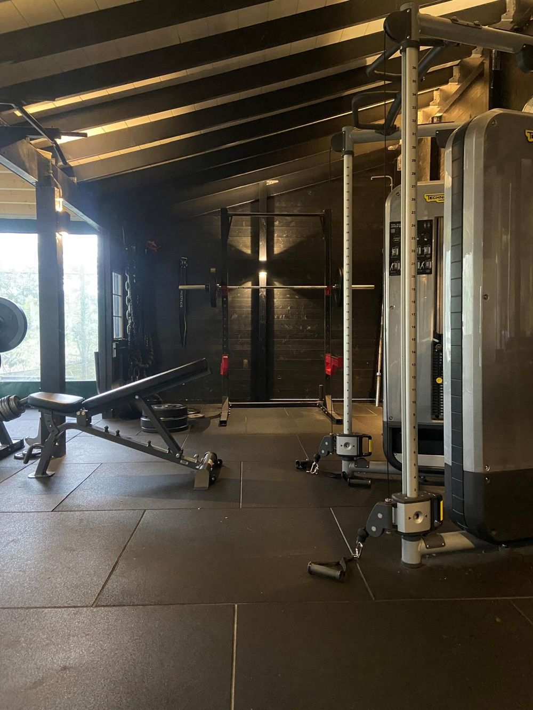
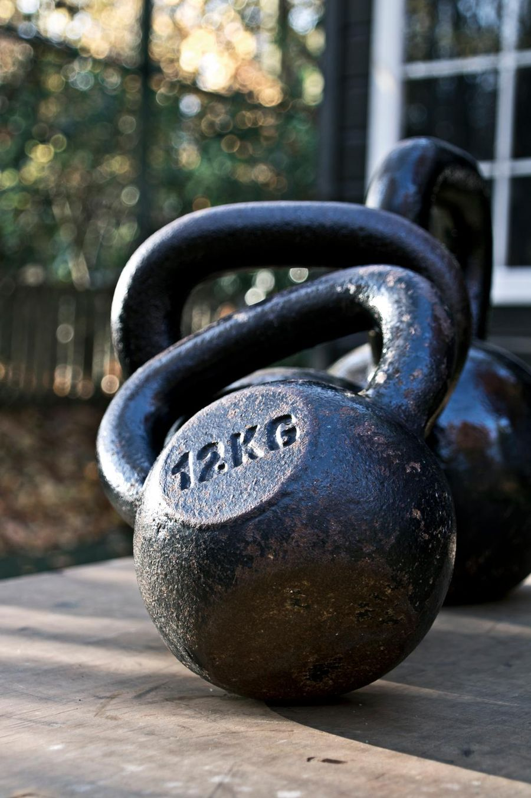
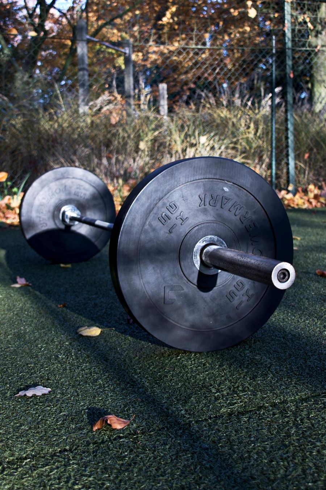
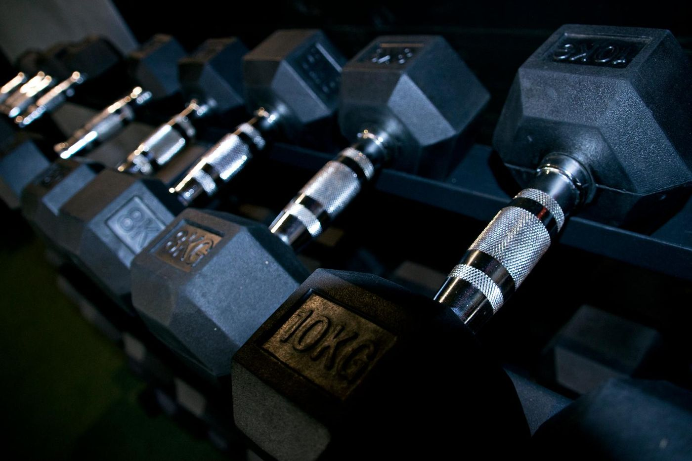
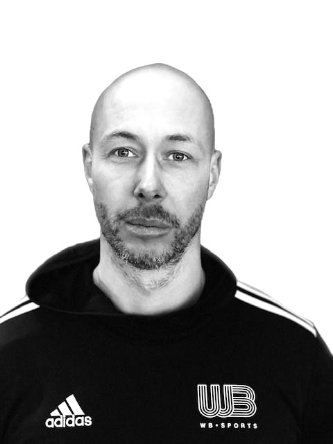

Personal training in Tilburg.
Bij WB-Sports train je één op één of in een groep, in een eigen studio in De Blaak. De intake is gratis.
- Intake
- Gratis
- Prijzen
- Op aanvraag
- Tijden
- 08.00 tot 22.00 uur
- Adres
- Dintel 43, De Blaak
Aanbod
Kies wat bij je past. Tijdens de intake stemmen we alles samen af.
-
Personal training
Eén op één, met volledige aandacht. Samen leggen we je doel vooraf vast: sterker worden, een betere conditie, minder stress, revalidatie of meer energie.
Wat je krijgt
- Persoonlijke intake met een duidelijk doel
- Voedingsadvies en leefstijlcoaching
- Elke vier weken een voortgangsmeting
- Een coach die 100% voor jouw doel gaat
-
Voeding
Voedingsadvies en leefstijlcoaching die passen bij jouw doel en je dagelijks leven. Zo ondersteunt wat je eet het werk dat je in je training steekt.
Wat je krijgt
- Voedingsschema op maat
- Leefstijlcoaching
- Huidplooimeting om je voortgang te volgen
-
Groepstraining
Small group training met maximaal 8 personen. Samen werken aan krachtopbouw, conditie en lichaamstransformatie.
Tijden
- Maandag
- Dames 19.00 tot 20.00
Heren 20.00 tot 21.00 - Woensdag
- Dames 19.00 tot 20.00
Heren 20.00 tot 21.00 - Vrijdag
- Gemengd 19.00 tot 20.00
- Zaterdag
- Gemengd 10.00 tot 11.00
De eerste afspraak is gratis.
In de intake bespreken we je doel, je ervaring en wat bij je past. Daarna hoor je wat het kost. Prijzen zijn op aanvraag.
Plan je gratis intakeDe studio
Een eigen trainingsruimte aan de Dintel, half binnen en half buiten, met een veld voor de deur.





Ik ga er 100% voor om jouw doel te halen.
Bij WB-Sports train je altijd met mij. Ik focus op kwaliteit: we leggen je doel vooraf vast, ik bewaak je voortgang en stuur bij waar dat nodig is.
Plan je gratis intake.
- Tijden
- 08.00 tot 22.00 uur